This chapter describes main usages of the XDS Modula-2 IDE.
Select File > New > Other... to create new resource. Select the appropriate wizard and press Next:
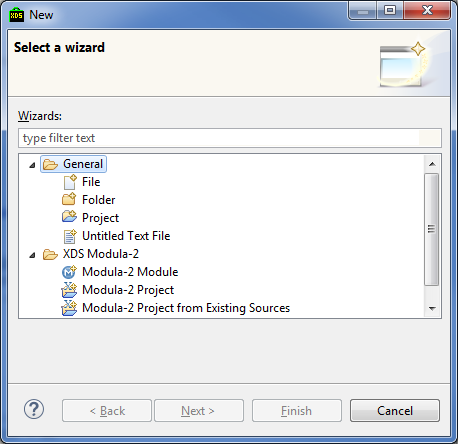
Provide all necessary parameters and Finish. The new resource will be created.
Select File > New > Modula-2 Project in the main menu, and provide necessary parameters:
Specify Project Name. Next, provide location of the project root directory (Project root field).
Select project SDK (Project SDK field). Use Configure... button to edit SDK settings.
One can create main module or project file, standard directory structure and redirection file. If Use SDK templates is checked then SDK templates will be used to create the files. Directory structure and redirection file name are also taken from the selected SDK settings.
Pressing the Finish button will create the new Modula-2 project and add it to the workspace. Newly created files and directories will show up in the Project Explorer.
To create project from existing sources select File > New > Modula-2 Project from Existing Sources in the main menu. Specify project settings in the wizard opened.

You can explicitly specify the new project name or it will be set automatically after the project root directory selection (Project root field).
Select the project SDK (Project SDK field): Unless otherwise indicated the default SDK is used. The Configure... button will open the SDK settings dialog.
Specify whether project file (Project File field) or main module (Main module) is used for the source build. One can select project file *.prj or main module file (*.mod or *.ob2) by pressing Browse... button.
Pressing the Finish button will create the new Modula-2 project and add it to the workspace. Newly created files and directories will show up in the Project Explorer.
To create the new Modula-2 module select File > New > Other... in the main menu or use Ctrl + N
hotkey. Select Modula-2 Module wizard under the XDS Modula-2 category (you can type module in the filter field to narrow the search). In the opened wizard
specify module parameters:
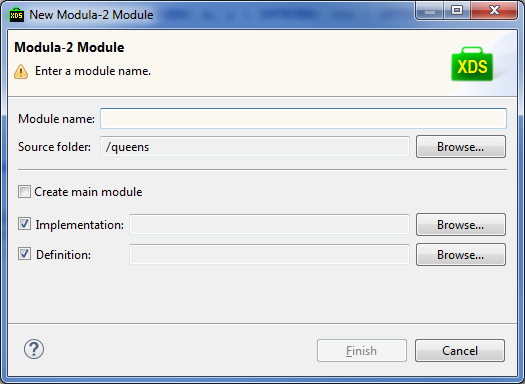
Specify new module name (Module name field).
Specify folder to store the module that will be created (Source folder field). The Browse... button allows to select
the directory from the available folders in workspace projects.
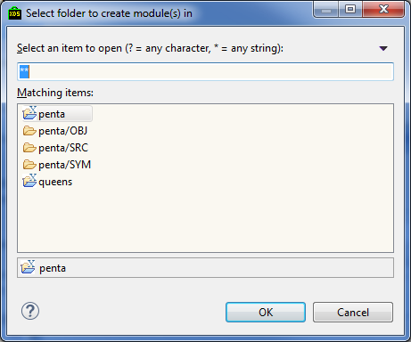
Text field atop allows to filter resources by name. Wildcards are supported : * stands for the arbitrary string, ? stands for the single character or emptry string.
Check the Create main module checkbox to promote the newly created module as the main project module. In this case it is necessary to specify implementation module (Implementation field).
For the ordinary (not main) module one can set up the implementation and definition files – the Implementation field and the Definition field. The Browse... button allows to select module location directory via the standard Eclipse Folder Selection dialog.
Pressing the Finish button in the wizard creates the module resource and add it to the workspace. Newly created files will show up in the Project Explorer.
Add or edit SDK under the XDS Modula-2 > Registered SDKs preference page.
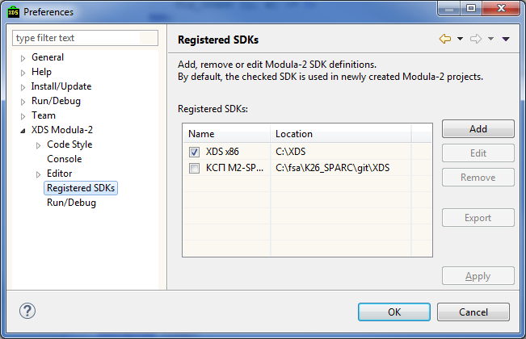
Use Add button to select the folder where SDK is installed to register the SDK.
When the selected SDK is configured to be used with the IDE (i.e. SDK root folder contains the sdk.ini) then the installed SDK list will show the new added SDK record.
If the sdk.ini file is absent then manual SDK configuration wizard will show up. One can always open the SDK configuration wizard by selecting the SDK in the list and pressing the Edit button.
To remove SDK use the Remove button.
To export selected SDK settings (*.ini file) press the Export button, select and select folder to export.
To apply and commit SDK changes press the Apply button.
To edit the particular SDK settings use the Edit SDK wizard.
Edit SDK wizard is depicted on the picture below:
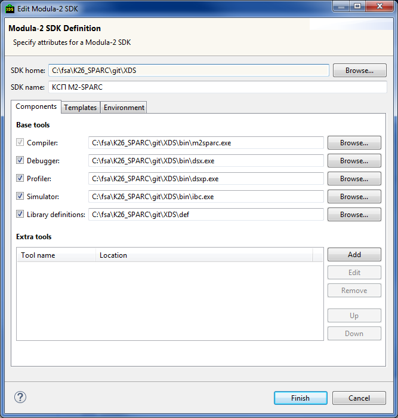
In the top part of the wizard fields XDS home and XDS name used to set up SDK root folder and SDK name.
Another settings are accessible from the following tabs: Components, Templates, Environment.
The Base tools section allow to specify main tools, such as:
The first three fields should specify either executable file path (*.exe or *.bat). Last field should specify path to library definitions folder containing definition files *.def. The only mandatory field of these is the first one, containing compiler path.
The Extra tools section allow to specify extra tools. These extra tools can be invoked via the Project Explorer context menu. It is possible to build the context menu structure.

Here you can specify:
To modify the menu items ordering use Up and Down buttons.
To reassign the instrument to the another group edit this instrument and change its group to another.
The Templates tab specifies file types and templates to create files to create files of these types.
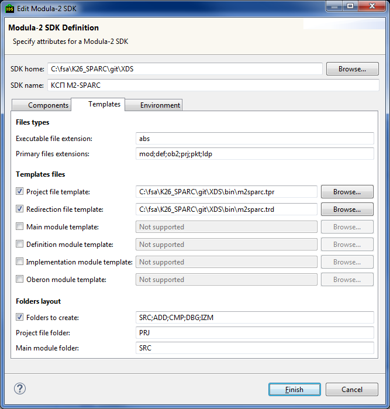
The Files types tab specifies two parameters:
The Templates files section specifies templates to create files.
The Folders layout section specifies directory names that will be created for the new project:
The Environment specifies environment variables.
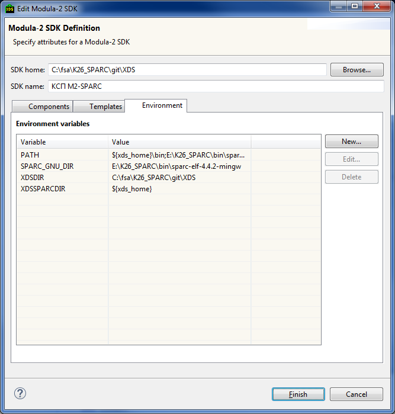
To add the new variable use the New... button. In the opened wizard set the variable properties and press the Finish button. To edit or delete the variable press the Edit... button or the Delete button.
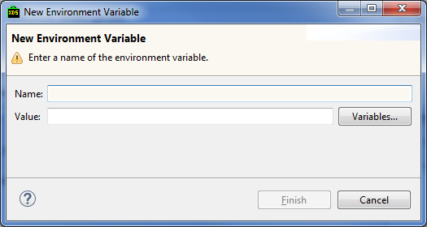
Variable has the following properties:
Only the name field is mandatory. When specifying the variable value one can use predefined IDE variables – these can be selected by pressing the Variables... button.
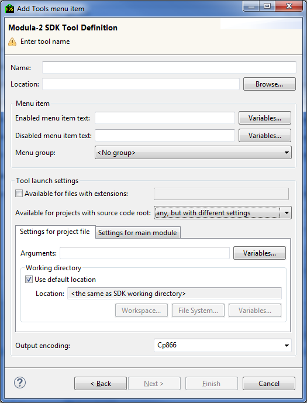
For the extra tools it is necessary to specify the following settings:
These fields are mandatory.
The Menu item text section can set up the menu for the Extra tool. It is possible to set the menu name for the enabled menu (Enabled menu item field) and the menu name for the disabled menu (Disabled menu item field). If the fields are not filled then instument name will be used.
Tool menu is the submenu for the Tools menu item in the IDE main menu or context menu.
The Tool launch settings section specifies the tools launch settings.
When Available for files with extensions checkbox is set then tool is applied only to the files with
the specified extensions: extensions should be separated with comma.
В поле Available for projects with source code root необходимо выбрать, для каких типов проекта доступен инструмент. Возможны следующие варианты:
The field Available for projects with source code root specifies project types for which the
tool is enabled.
After selecting the project type it is possible to specify launch parameters and working directory.
The Output encoding field specifies standard output (and standard error) encoding.
To specify arguments it is possible to use predefined IDE variables – these can be selected by pressing the Variables... button. More on this please see Working with variables
The working directory is set up in the Working directory section. To use the SDK working directory – check the Use default location checkbox or manualy specify in the
Location field (see Selecting working directory).
To create or edit launch configuration select Run > Run Configurations... or Run > Debug Configurations... in the main menu.
In the opened dialog select XDS Modula-2 Application in the left pane, open context menu with the right mouse
click and select New.

To edit the existing launch configuration select it in the left pane - the right pane will display its properties.

Type run configuration name in the Name field.
Select target workspace project for this run configuration and executable file for the launch. Apply button saves changes for the edited run configuration, Revert button reverts run configuration parameters to the last saved state.
Next we will describe tabs used when creating or editing the run configuration.
Select the project for the run configuration on the Main tab – fill in the Project field. Project is selected from the current workspace it is possible to type the project name manually or to use the project selection dialog.
Next specify the executable file for run – it is done under the Program to Run section (see the Select folder or file section).
The Arguments tab allows to specify program arguments and working directory for the launched program.
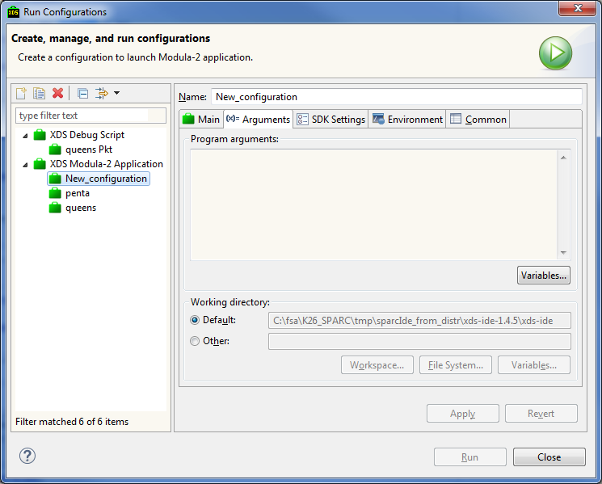
Specify program arguments under the Program arguments section. It is possible to use predefined IDE variables to
specify arguments. To do this press the Variables... button. More on predefined IDE variables see Variables....
Under the Working directory it is possible to specify whether to use project folder – Default item, or any other folder – Other folder. See (Select file or folder).
The SDK Settings tab allows to specify arguments for simulator and debugger – in the sections Simulator arguments and Debugger arguments correspondingly.
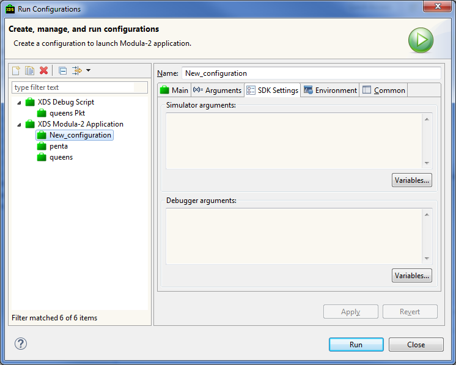
It is possible to use predefined IDE variables. More on this see Working with variables
The Environment allow to set environment variables.
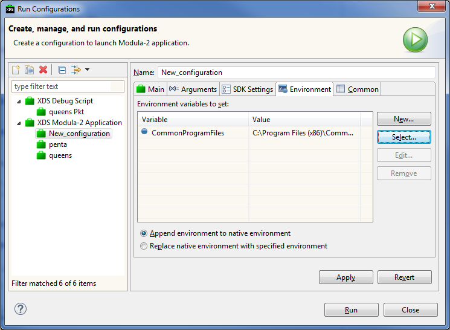
To add new predefined IDE variable press New... at the right.
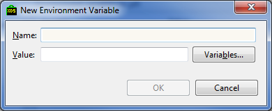
In the opened dialog specify variable name (Name field - mandatory) and variable value (Value field - optional). Variable value can be typed manually or predefined variables can be used (use Variables... button).
Press Edit... button to edit the variable.
It is possible to add variable from the list. Press Select... button to open this list.
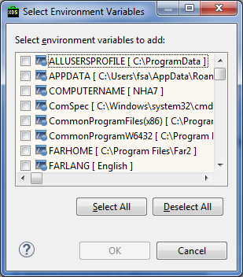
Select required variables in the list. Selected variables will be added to predefined IDE variables.
To delete environment variable select it in the list and press Remove.
If there is at least one variable choice is enabled:
The Common tab allow to specify general launch configuration settings.
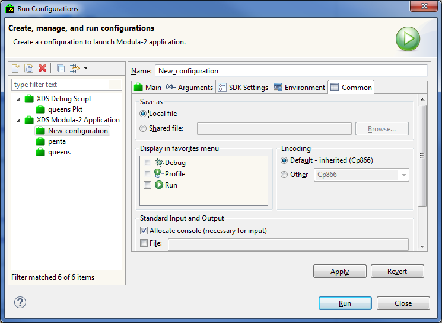
The Save as section allows to set whether to save launch configuration as local file (Local file item) or as shared file (Shared file item). In the latter case it is necessary to specify directory to save the launch configuration.
The Display in favorites menu section allows to specify whether to show launch configuration in the Favorites dropdown at Run/Debug menu.
Select encoding in the Encoding section: default (Default item) or specific (Other item).
The Standard Input and Output section allows to specify input/output integration parameters.
One can use:
The file will be appended if Append checkbox is checked.
File or folder selection is a common task in various wizards and dialogs. It is possible to fill the Location field manually or using buttons:
After the field is filled the Location field becomes the hyperlink – double click on it will open native operating system explorer.
IDE predefined variables are often used in various wizards and dialogs. To open the variable list click on the Variables... button.
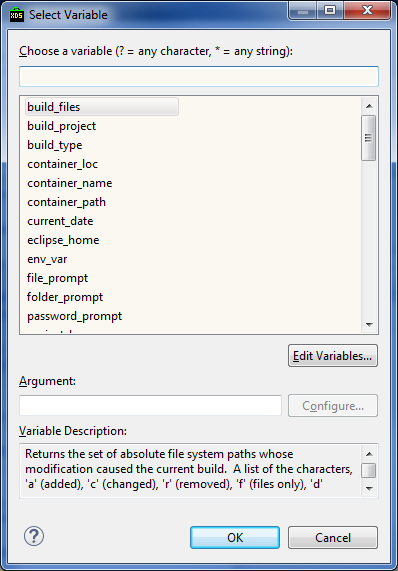
Filter field atop of the dialog alllow to quick filter variables by their name. Wildcards are enabled: * is an arbitrary string, ? is a single character or an empty string.
When the particular variable is selected the Variable Description field will show the quick variable
description. Some variables can make use of their arguments – in this case Argument field will become active – arguments can be configured with the Configure... button.
Apply changes and close the dialog with the OK button.
Argument configuration dialog looks like the following:
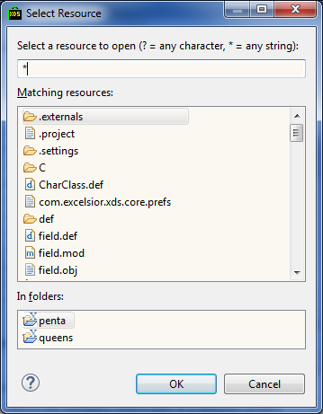
Filter field atop of the dialog alllow to quick filter variables by their name. Wildcards are enabled: * is an arbitrary string, ? is a single character or an empty string. The Matching resources field show resources matching the
condition.
When the resource is selected the In folders field will show its location.
One can introduce new variables using the Edit Variables... button. To add the variable press the New...
button on the right.
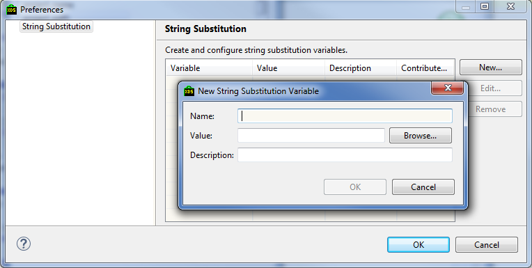
Variable has the following properties:
Only the name field is mandatory. When specifying the variable value one can use predefined IDE variables – these can be selected by pressing the Variables... button.
Press the OK button to add the variable to list.
To edit the variable use the Edit... button, to delete it use the Remove button.
Edit
Ctrl+Z
Undo last edit
Ctrl+Shift+Z
Redo last edit
Ctrl+Y
delete current line
Ctrl+/
Comment/uncomment lines
Ctrl+Shift+/
Comment selected
Ctrl+Shift+\
Uncomment
Ctrl+I
Indent selected lines
Ctrl+Shift+F
Format selected text
Alt+Shift+Up
Select containing construction
Alt+Shift+Down
Shrink containing construction selection
Ctrl+R
Rename element
Search
Ctrl+F
Open xFind panel
Ctrl+Вверх
xFind: quick find previos occurence
Ctrl+Вниз
xFind: quick find next occurence
Ctrl+Alt+F
Search and replace dialog
Ctrl+H
Модула-2 search
Ctrl+G
Find declarations of the selected element in the workspace
Ctrl+Shift+G
Find usages of the selected element in the workspace
Navigation
Ctrl+L
Go to line
F3
Open declaration of the selected element
Ctrl+M
Open module from list
Ctrl+P
Open coupled module
Alt+Shift+O
Enable/disable mark occurences
Компиляция и запуск
F9
Compile file
Shift+F9
Build project
Ctrl+Shift+F9
Rebuild project from scratch
Ctrl+F11
Launch last Run configuration
F11
Launch last Debug configuration
Numbered bookmarks
Ctrl+Shift+<digit>
Add/remove corresponding bookmark at the current line
Ctrl+<цифра>
Goto corresponding bookmark
Ctrl+=
Goto bookmark
Ctrl+Shift+=
Add/remove
Прочее
Ctrl+O
Show module quick outline
F2
Show context tooltip
F12
Show context help
Ctrl+Shift+L
Show key assist
Alt+F9
Maximize/restore editor window
Ctrl+Tab
Next editor
Ctrl+‘
Next view